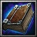
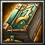
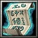

| 物品名稱 | 圖片 | 價格 | 說明 | |
| 神速之卷(Q) | 900 | [使用]使範圍1000內的友軍增加22%移動速度，持續10秒 消耗法力125，等待時間24秒 會被魔法免疫解除效果 |
||
| 堅守之卷(W) |
685 | [使用]使範圍1000內的友軍增加15點裝甲，持續20秒 消耗法力150，等待時間40秒 會被魔法免疫解除效果 |
||
| 奮鬥之卷(E) |
700 |
[使用]使範圍1000內的友軍增加40%攻擊力，持續6秒
消耗法力100，等待時間12秒 會被魔法免疫解除效果 |
||
| 伏兵之卷(Ｒ) | 1030 | [使用]使目標隱形，持續7秒 消耗法力472，等待時間45秒 會被魔法免疫解除效果 |
||
| 天變之書(A) |
2425 | 智慧+20 [使用]使1200範圍的地區每秒落下180傷害的雷擊。 施展距離700，需持續施法但最多可持續14秒。消耗法力380，等待時間40秒 |
||
| 落石之書(S) |
3050 | 智慧+20 [使用]落下巨石對300範圍的敵人造成550點傷害並無視魔法免疫的中斷動作。 施展距離700，落下延遲0.5秒。消耗法力240，等待時間25秒 |
||
| 水計之書(D) |
 | 3800 | 智慧+20 [使用]在300範圍內的指定區域召喚出一道瀑布，瀑布共9波的洪水每秒一波可造成附近400範圍200點傷害。消耗法力425，等待時間32秒 |
|
| 火計之書(F) |  | 3925 | 智慧+20 [使用]指定1800範圍內的區域實行火計對800範圍內的敵人造成535點傷害、對建築物造成507點傷害， 然後5秒內每秒造成80點傷害。消耗法力450，等待時間40秒 |
|
| 雷之卷(Z) |
700 | [使用]對6個目標造成350點傷害，施展距離600。 消耗法力100，等待時間20秒 |
||
| 兵法捲軸(X) |
 | 1700 | 智慧+13 [使用]使300範圍內的敵人4秒內無法攻擊以及使用法術，施展距離700。 消耗法力160，等待時間35秒 |
|
|
||||
| 法術書(C) |
2450 | 所有屬性+5
施展緩慢術或自我恢復
緩慢術
[使用]讓一個敵方部隊的移動速度降低40%。
持續10秒
消耗法力100，等待時間20秒 自我恢復
[使用]每秒恢復指定友方部隊50點生命值。 持續20秒 消耗法力250，等待時間20秒 |